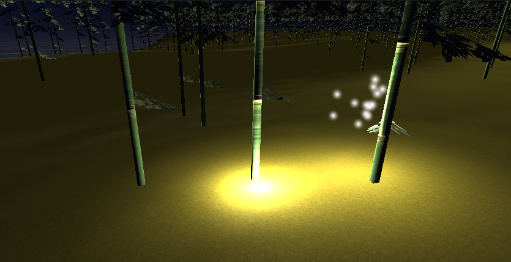
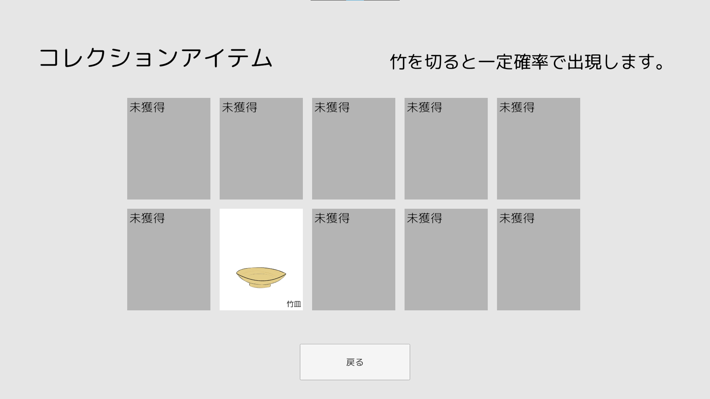

Taketori（チーム制作）

1. 作品概要
かぐや姫の話をモチーフとした、3D アクションゲームです。 無数に広がる竹林で、竹を伐採しながらかぐや姫が入った竹を切ることを目指すゲームです。
2. 成果
- デプロイ先
- リポジトリ（アセットは除く）
- デモ動画
3. 操作方法
- WASD キー: 歩行
- マウス: 視点操作
- 左クリック: 通常攻撃
- 右クリック: 特殊攻撃
- Tab キー: 特殊攻撃の攻撃範囲切り替え
竹を切った本数でスコアが算出されます。また、竹を切った時一定確率でアイテムをドロップします。
竹を切った本数によって主人公の若さの数値が減少して、歩くスピードが上昇します。
空に浮かぶ月の真下にかぐや姫が入った竹があり、その竹を切るとゲームが終了します。
ゲーム終了後、切った竹の本数に応じて点数が算出されます。
4. 開発期間
約 2 週間程度
5. 開発環境
Unity（WebGL）
5.1. 使用ライブラリ
- UniRx
- Json.Net
- UniTask
etc.
6. 開発メンバーと担当範囲
2 人で、私が主導となってプロジェクトを進行しましたが、企画・開発の作業は 2 人で担当しました。
具体的な私の担当範囲は
- 竹の機能実装
- 音の実装
- コレクションアイテムの抽選
- スコア・制限時間の実装
- UI の簡易デザイン
- イラストアセット制作
7. ポイント
竹の汎化
竹の種類に応じて独自の処理を実行できるよう、拡張可能な設計を行いました。
現在、竹は三種類実装されており、「通常の竹」「光る竹」「かぐや竹」があります。

それぞれ、IBamboo インタフェースを実装及び MonoBehavior を継承した GenericBamboo を継承しており、動作の共通化及び細分化が行われています。
IBamboo では、攻撃時に実行するアクションと竹の種類を返すメソッドが定義されています。
GenericBamboo では、攻撃時に実行するアクションのみが実装されており、竹の種類を返すメソッドの実装は継承先で行います。
また、GenericBamboo の攻撃アクションは上書き可能となっており、「かぐや竹」では、クリアイベントを発火する独自実装を行っています。竹の生成方法
今回存在する竹のうち、「光る竹」「かぐや竹」の 2 種は生成される数が決まっているため、生成アルゴリズムを工夫しました。
BambooGenerator.cs :
https://github.com/nemlyc/Taketori/blob/3bb80965cde167db1a133503d8d7a2b1bed2704e/Assets/Scripts/Bamboo/BambooGenerator.cs事前に光る竹とかぐや竹となりうる竹を手動配置し、Shinable タグを設定します。
ゲーム実行時、タグで取得した竹の位置の中からランダムで竹を変化させています。一つのタグから生成する事による重複を避けるため、「光る竹」を生成後、「かぐや竹」を生成しています。
「かぐや竹」を探すこともゲーム内容であることから、プレイヤーの近くに生成されてしまうことを防ぐために、事前に一定距離がある生成位置を定めています。
コレクションアイテムの抽選
無数の竹を切る過程で、一定確率で収集アイテムを取得できる機能を実装しました。
所持アイテムは常に重複がないよう管理しており、取得データを参考に、未獲得アイテム内から抽選を行います。

8. 展望
- 特殊攻撃のバランス調整（クールタイムの設定）
- 現状通常攻撃と区別がなく、交互に発火させることで高頻度で発動できてしまい、単なる連打ゲームになってしまうというフィードバックがあったため。
- 攻撃範囲がわかりづらいため、それをわかりやすくする UI の実装も同時に検討。
- アイテムのドロップ率調整
- 現状一律なため、光る竹との差異を設けて、狙ってアイテム収集できる仕組みを検討。